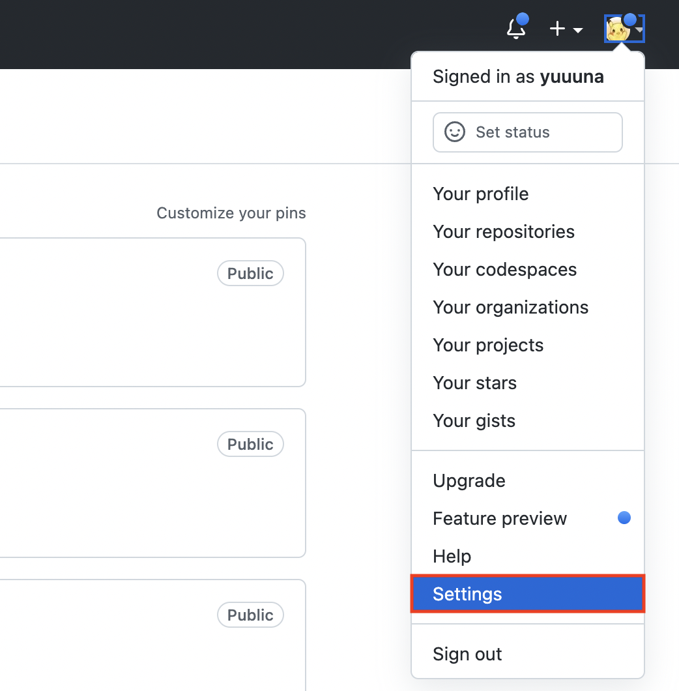
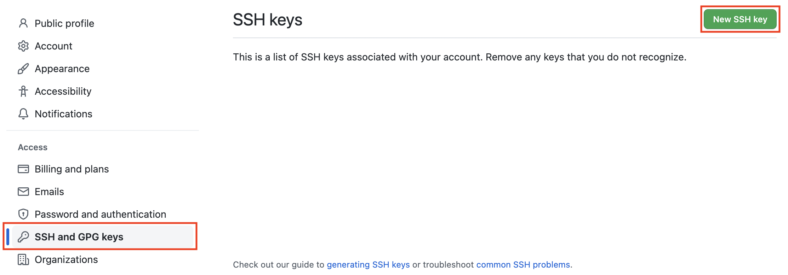

[SSH] 於 macOS 建立 SSH Key，並套用至 Github
SSH Key 用於非常多地方，最常見的 VM 連線、Github 連線等，設定上去就可以取代以往輸入帳號密碼的方式進行登入或是 git Push，而這邊將以使用 SSH Key 連線 Github 為例。
建立 SSH Key
產生 SSH Key
輸入 ssh-keygen 將開始產生 ssh key 的動作，建議輸入前先切換至 ~/.ssh 資料夾
$ ssh-keygen
Generating public/private rsa key pair.
Enter file in which to save the key (/Users/yuuna/.ssh/id_rsa): github.key ## 這邊輸入名稱，舉例輸入 github.key
Enter passphrase (empty for no passphrase): ## 輸入密碼，可不輸入 (若輸入每次 push 需多輸入密碼)
Enter same passphrase again: ## 同上，再次輸入密碼
Your identification has been saved in github.key
Your public key has been saved in github.key.pub
The key fingerprint is: ## 將顯示 fingerprint
將會產生 github.key(私鑰) 與 github.key.pub(公鑰) 兩組檔案
$ ls
github.key github.key.pub
查看 SSH 公鑰
可以使用 cat 來查看，輸入 cat github.key.pub 來查看公鑰
$ cat github.key.pub
ssh-rsa 一大串密碼 電腦名稱
連結至 Github SSH Key
右上角大頭貼選單 -> Settings -> SSH and GPG keys -> New SSH key
 這邊輸入 SSH Key 的名稱與公鑰(ssh-rsa 一大串密碼 電腦名稱 全部直接貼上哦!)，
輸入完直接按新增
這樣就完成本機與 Github 上 SSH Key 的設定與連結囉
刪除 SSH Key 公鑰
若 Github 以設定完成，記得把公鑰刪除哦!
rm github.key.pub
私鑰當然記得保存好囉，不見了就只能重新產生與連結了
設定 SSH Config
若在 Push 的時候發生還是沒有權限
$ git push
git@github.com: Permission denied (publickey).
fatal: Could not read from remote repository.
Please make sure you have the correct access rights
and the repository exists.
代表你需要設定本機 github.com 應該讀取哪個私鑰
新增 ~/.ssh/config 檔案，並且關聯 Host 為 github.com 的，要使用哪個私鑰
Host github.com
IdentityFile ~/.ssh/github.key
若你有多組 SSH key，就會像這樣子，依序設定每個的對應
Host github.com
IdentityFile ~/.ssh/github.key
Host gitlab.com
IdentityFile ~/.ssh/gitlab.key
Host bitbucket.org
IdentityFile ~/.ssh/bitbucket.key
設定完成就可以 Push 囉~